2. Available Distributions and Related Functions
Source:vignettes/workflows/v02-available-distributions.Rmd
v02-available-distributions.RmdLegacy vignette (for the website / historical notes). These files may not match the current exported API one-to-one. Last verified: 2026-01-18.
For the up-to-date workflow, see the main package vignettes (Introduction, Model Spec, MCMC Workflow, Unconditional/Conditional/Causal, Backends, S3 Reference).
# Helpers
q_vec <- function(fn, probs, ...) vapply(probs, function(p) fn(p, ...), numeric(1))
density_curve <- function(grid, fn, args) {
vapply(grid, function(x) do.call(fn, c(list(x = x), args)), numeric(1))
}
draw_many <- function(fn, args, n_draws = 5) {
if (!is.null(args$label)) args$label <- NULL
vapply(seq_len(n_draws), function(i) do.call(fn, c(list(n = 1), args)), numeric(1))
}Mathematical definitions and conventions
This vignette documents the probability distributions exported by
DPmixGPD and the corresponding d/p/q/r
functions used throughout the package. For a continuous random variable
with parameter scalars
,
we use the standard quartet:
-
Density (PDF):
,
implemented by
d*(). -
Distribution (CDF):
,
implemented by
p*(). -
Quantile:
,
implemented by
q*(). -
Random generation:
with
,
implemented by
r*().
All d*() functions optionally return log-densities via
log = TRUE, i.e.,
.
This is numerically convenient because likelihoods multiply densities
but add log-densities:
All p*() functions support lower.tail and
log.p:
The d*(), p*(), and q*()
functions accept vector inputs for their first argument and evaluate
elementwise; r*() supports n > 1 (including
n = 0).
w <- c(0.60, 0.40)
shape <- c(2.0, 5.0)
scale <- c(1.0, 2.0)
dGammaMix(seq(0.5, 2.0, length.out = 5), w = w, shape = shape, scale = scale)[1] 0.182 0.219 0.216 0.194 0.165[1] 0.731 3.126 12.550
rGammaMix(5, w = w, shape = shape, scale = scale)[1] 0Finite mixtures
Several kernels are available as finite mixtures. Let denote the th component density and let be mixture weights with and . The mixture density and CDF are
Random generation proceeds by sampling a latent component index , then sampling . Mixture quantiles typically require numerical inversion of the mixture CDF.
GPD tails and splicing
The Generalized Pareto Distribution (GPD) is used
for tail modeling relative to a threshold
.
In the spliced kernels (the *Gpd functions), a bulk kernel
is used below
and a GPD tail is attached above
,
with parameters
.
In code, these are represented by threshold = u,
tail_scale = \sigma, and tail_shape = \xi (the
standalone GPD functions use scale and shape
for
and
).
Introduction with GPD kernel
Generalized Pareto distribution (standalone tail)
The standalone GPD functions dGpd, pGpd,
qGpd, and rGpd implement the distribution of
above a threshold
.
For
,
the density is
The CDF is and the quantile is with the exponential-limit case obtained as .
Parameter mapping (math
code):
threshold,
scale,
shape. Log-densities are returned when
log = TRUE.
We show the DPmixGPD kernels in pairs: bulk-only and GPD-augmented. A GPD tail above threshold uses
The standalone GPD tail distribution is available via
dGpd, pGpd, qGpd, and
rGpd functions.
dGpd(1.8, threshold = 1.5, scale = 0.5, shape = 0.2)[1] 1.01
dGpd(1.8, threshold = 1.5, scale = 0.5, shape = 0.2, log = TRUE)[1] 0.0132
pGpd(1.8, threshold = 1.5, scale = 0.5, shape = 0.2)[1] 0.433
pGpd(1.8, threshold = 1.5, scale = 0.5, shape = 0.2, lower.tail = FALSE)[1] 0.567
pGpd(1.8, threshold = 1.5, scale = 0.5, shape = 0.2, log.p = TRUE)[1] -0.838
q_vec(qGpd, c(0.25, 0.5, 0.75), threshold = 1.5, scale = 0.5, shape = 0.2)[1] 1.65 1.87 2.30
q_vec(qGpd, c(0.25, 0.5, 0.75), threshold = 1.5, scale = 0.5, shape = 0.2,
lower.tail = FALSE)[1] 2.30 1.87 1.65
q_vec(qGpd, c(log(0.25), log(0.5), log(0.75)), threshold = 1.5, scale = 0.5,
shape = 0.2, log.p = TRUE)[1] 1.65 1.87 2.30
draw_many(rGpd, list(threshold = 1.5, scale = 0.5, shape = 0.2))[1] 1.66 1.74 1.96 3.03 1.62
grid <- seq(-4, 15, length.out = 500)
gpd_sets <- list(
list(label = "GPD A", threshold = 1.5, tail_scale = 0.5, tail_shape = 0.2),
list(label = "GPD B", threshold = 2.0, tail_scale = 0.6, tail_shape = 0.15),
list(label = "GPD C", threshold = 1.0, tail_scale = 0.4, tail_shape = 0.25)
)
df_gpd <- do.call(rbind, lapply(gpd_sets, function(ps) {
data.frame(x = grid, density = density_curve(grid, dGpd, list(threshold = ps$threshold, scale = ps$tail_scale, shape = ps$tail_shape)), label = ps$label)
}))
ggplot(df_gpd, aes(x = x, y = density, color = label)) +
geom_line(linewidth = 1) +
labs(title = "Standalone GPD tails", x = "x", y = "density") +
theme_minimal() + theme(legend.position = "top")
Each subsection below defines the available functions, prints example outputs for fixed parameters, and overlays density curves for three parameter sets with clear legends. The same parameter sets are reused within the bulk and GPD variants of a section.
Normal
Normal mixture kernel
A normal component is parameterized by and :
A finite normal mixture with components has density
Parameter mapping (math
code):
mean[j],
sd[j],
w[j].
Normal mixture with GPD tail
In the spliced version, the bulk distribution is the normal mixture below , and a GPD tail is attached above . The tail parameters are and , applied to exceedances .
Tail mapping (math
code):
threshold,
tail_scale,
tail_shape.
Without GPD (mixture kernel)
grid <- seq(-4, 5, length.out = 400)
normal_sets <- list(
list(label = "Mix A", w = c(0.6, 0.3, 0.1), mean = c(-1, 0.5, 2), sd = c(2, 0.6, 1.1)),
list(label = "Mix B", w = c(0.5, 0.3, 0.2), mean = c(-1.2, 0.3, 1.5), sd = c(0.9, 0.7, 1.0)),
list(label = "Mix C", w = c(0.4, 0.35, 0.25), mean = c(-0.5, 2, 2.5), sd = c(0.7, 0.6, 1.2))
)
example <- normal_sets[[1]]
dNormMix(0, w = example$w, mean = example$mean, sd = example$sd)[1] 0.254
dNormMix(0, w = example$w, mean = example$mean, sd = example$sd, log = TRUE)[1] -1.37
pNormMix(0, w = example$w, mean = example$mean, sd = example$sd)[1] 0.479
pNormMix(0, w = example$w, mean = example$mean, sd = example$sd, lower.tail = FALSE)[1] 0.521
pNormMix(0, w = example$w, mean = example$mean, sd = example$sd, log.p = TRUE)[1] -0.736
q_vec(qNormMix, c(0.25, 0.5, 0.75), w = example$w, mean = example$mean,
sd = example$sd)[1] -1.4234 0.0805 0.9495
q_vec(qNormMix, c(0.25, 0.5, 0.75), w = example$w, mean = example$mean,
sd = example$sd, lower.tail = FALSE)[1] 0.9495 0.0805 -1.4234
q_vec(qNormMix, c(log(0.25), log(0.5), log(0.75)), w = example$w,
mean = example$mean, sd = example$sd, log.p = TRUE)[1] -1.4234 0.0805 0.9495
draw_many(rNormMix, list(w = example$w, mean = example$mean, sd = example$sd))[1] 1.4572 -0.4240 -0.0251 0.4965 1.6641
df_norm <- do.call(rbind, lapply(normal_sets, function(ps) {
data.frame(x = grid, density = density_curve(grid, dNormMix, list(w = ps$w, mean = ps$mean, sd = ps$sd)), label = ps$label)
}))
ggplot(df_norm, aes(x = x, y = density, color = label)) +
geom_line(linewidth = 1) +
labs(title = "Normal mixtures (bulk)", x = "x", y = "density") +
theme_minimal() + theme(legend.position = "top")
With GPD tail
Spliced density uses the same mixture for and attaches above with continuity. CDF combines mixture CDF up to and GPD exceedance beyond ; quantiles invert this spliced CDF; RNG draws bulk vs tail by the CDF mass at .
normal_gpd_sets <- list(
list(label = "Mix A", w = c(0.6, 0.4), mean = c(-1, 2), sd = c(0.5, 0.8), threshold = 1.8, tail_scale = 0.4, tail_shape = 0.25),
list(label = "Mix B", w = c(0.5, 0.5), mean = c(0, 1), sd = c(0.6, 0.6), threshold = 1.5, tail_scale = 0.3, tail_shape = 0.2),
list(label = "Mix C", w = c(0.7, 0.3), mean = c(0.5, 2.5), sd = c(0.4, 1.0), threshold = 2.0, tail_scale = 0.5, tail_shape = 0.15)
)
example <- normal_gpd_sets[[1]]
dNormMixGpd(2, w = example$w, mean = example$mean, sd = example$sd, threshold = example$threshold, tail_scale = example$tail_scale, tail_shape = example$tail_shape)[1] 0.332
pNormMixGpd(2, w = example$w, mean = example$mean, sd = example$sd, threshold = example$threshold, tail_scale = example$tail_scale, tail_shape = example$tail_shape)[1] 0.85
q_vec(qNormMixGpd, c(0.5, 0.9), w = example$w, mean = example$mean, sd = example$sd, threshold = example$threshold, tail_scale = example$tail_scale, tail_shape = example$tail_shape)[1] -0.517 2.190
draw_many(rNormMixGpd, example)[1] 1.898 -1.311 -0.438 -1.008 2.309
df_norm_gpd <- do.call(rbind, lapply(normal_gpd_sets, function(ps) {
data.frame(x = grid, density = density_curve(grid, dNormMixGpd, list(w = ps$w, mean = ps$mean, sd = ps$sd, threshold = ps$threshold, tail_scale = ps$tail_scale, tail_shape = ps$tail_shape)), label = ps$label)
}))
ggplot(df_norm_gpd, aes(x = x, y = density, color = label)) +
geom_line(linewidth = 1) +
labs(title = "Normal mixtures with GPD tail (different thresholds)", x = "x", y = "density") +
theme_minimal() + theme(legend.position = "top")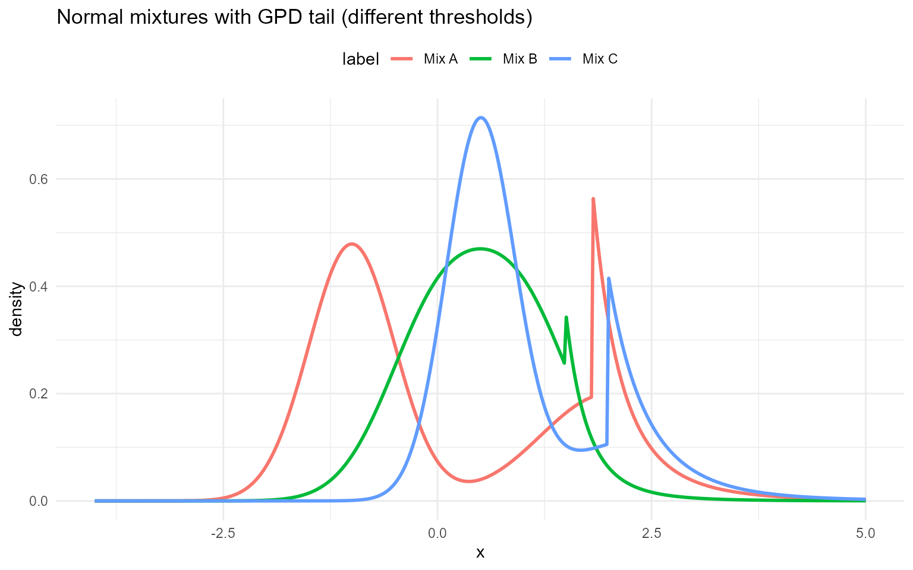
Gamma
Gamma mixture kernel
A gamma component with shape and scale has density
A finite gamma mixture with components is
Parameter mapping (math
code):
shape,
scale, and weights
w[j].
The *MixGpd variant uses the same splicing idea: gamma
mixture below
and a GPD tail above
.
Tail mapping (math
code):
threshold,
tail_scale,
tail_shape.
Without GPD (mixture kernel)
grid <- seq(0, 10, length.out = 400)
gamma_sets <- list(
list(label = "Mix A", w = c(0.6, 0.3, 0.1), shape = c(2.0, 5.0, 9.0), scale = c(1.0, 0.6, 0.3)),
list(label = "Mix B", w = c(0.5, 0.3, 0.2), shape = c(1.5, 4.0, 7.0), scale = c(1.2, 0.7, 0.35)),
list(label = "Mix C", w = c(0.4, 0.3, 0.3), shape = c(1.2, 3.5, 6.0), scale = c(1.4, 0.75, 0.4))
)
example <- gamma_sets[[1]]
dens <- do.call(rbind, lapply(gamma_sets, function(s) {
data.frame(
x = grid,
density = dGammaMix(grid, w = s$w, shape = s$shape, scale = s$scale),
label = s$label
)
}))
dGammaMix(2, w = example$w, shape = example$shape, scale = example$scale)[1] 0.295
dGammaMix(2, w = example$w, shape = example$shape, scale = example$scale, log = TRUE)[1] -1.22
pGammaMix(2, w = example$w, shape = example$shape, scale = example$scale)[1] 0.452
pGammaMix(2, w = example$w, shape = example$shape, scale = example$scale, lower.tail = FALSE)[1] 0.548
pGammaMix(2, w = example$w, shape = example$shape, scale = example$scale, log.p = TRUE)[1] -0.793
qGammaMix(0.95, w = example$w, shape = example$shape, scale = example$scale)[1] 5.01
qGammaMix(0.95, w = example$w, shape = example$shape, scale = example$scale, lower.tail = FALSE)[1] 0.475
df_gamma <- do.call(rbind, lapply(gamma_sets, function(ps) {
data.frame(x = grid, density = density_curve(grid, dGammaMix, list(w = ps$w, shape = ps$shape, scale = ps$scale)), label = ps$label)
}))
ggplot(df_norm, aes(x = x, y = density, color = label)) +
geom_line(linewidth = 1) +
labs(title = "Gamma mixtures (bulk)", x = "x", y = "density") +
theme_minimal() + theme(legend.position = "top")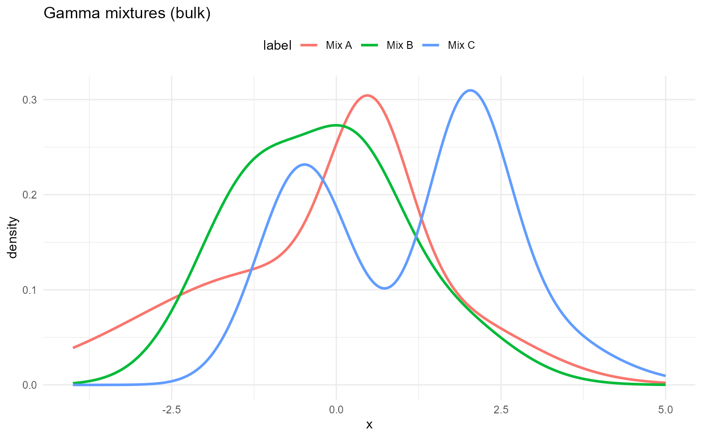
Gamma mixture with GPD tail
u <- 6
tail_scale <- 1.0
tail_shape <- 0.2
dGammaMixGpd(6.5, w = example$w, shape = example$shape, scale = example$scale,
threshold = u, tail_scale = tail_scale, tail_shape = tail_shape)[1] 0.0109
dGammaMixGpd(6.5, w = example$w, shape = example$shape, scale = example$scale,
threshold = u, tail_scale = tail_scale, tail_shape = tail_shape, log = TRUE)[1] -4.51
pGammaMixGpd(6.5, w = example$w, shape = example$shape, scale = example$scale,
threshold = u, tail_scale = tail_scale, tail_shape = tail_shape)[1] 0.988
pGammaMixGpd(6.5, w = example$w, shape = example$shape, scale = example$scale,
threshold = u, tail_scale = tail_scale, tail_shape = tail_shape, lower.tail = FALSE)[1] 0.012
qGammaMixGpd(0.95, w = example$w, shape = example$shape, scale = example$scale,
threshold = u, tail_scale = tail_scale, tail_shape = tail_shape)[1] 5.01
gamma_gpd_sets <- list(
list(label = "Mix A", w = c(0.6, 0.4), shape = c(2.0, 5.0), scale = c(1.0, 0.6), threshold = 6.0, tail_scale = 1.0, tail_shape = 0.2),
list(label = "Mix B", w = c(0.5, 0.5), shape = c(1.5, 4.0), scale = c(1.2, 0.7), threshold = 5.5, tail_scale = 0.8, tail_shape = 0.15),
list(label = "Mix C", w = c(0.7, 0.3), shape = c(1.2, 3.5), scale = c(1.4, 0.75), threshold = 6.5, tail_scale = 1.2, tail_shape = 0.25)
)
df_gamma_gpd <- do.call(rbind, lapply(gamma_gpd_sets, function(ps) {
data.frame(x = grid, density = density_curve(grid, dGammaMixGpd, list(w = ps$w, shape = ps$shape, scale = ps$scale, threshold = ps$threshold, tail_scale = ps$tail_scale, tail_shape = ps$tail_shape)), label = ps$label)
}))
ggplot(df_norm_gpd, aes(x = x, y = density, color = label)) +
geom_line(linewidth = 1) +
labs(title = "Gamma mixtures with GPD tail (different thresholds)", x = "x", y = "density") +
theme_minimal() + theme(legend.position = "top")## Lognormal
Lognormal mixture kernel
A lognormal component is defined by , i.e.,
A finite lognormal mixture has density
Parameter mapping (math
code):
meanlog[j],
sdlog[j],
w[j].
Lognormal mixture with GPD tail
The *MixGpd variant uses the same splicing idea:
lognormal mixture below
,
GPD tail above
.
Tail mapping (math
code):
threshold,
tail_scale,
tail_shape.
Without GPD (mixture kernel)
grid <- seq(0, 8, length.out = 400)
logn_sets <- list(
list(label = "Mix A", w = c(0.6, 0.3, 0.1), meanlog = c(0.0, 0.3, 0.6), sdlog = c(0.4, 0.5, 0.6)),
list(label = "Mix B", w = c(0.5, 0.3, 0.2), meanlog = c(0.1, 0.4, 0.7), sdlog = c(0.35, 0.45, 0.55)),
list(label = "Mix C", w = c(0.4, 0.35, 0.25), meanlog = c(0.2, 0.5, 2), sdlog = c(0.3, 0.4, 0.5))
)
example <- logn_sets[[1]]
dLognormalMix(1, w = example$w, meanlog = example$meanlog, sdlog = example$sdlog)[1] 0.839
dLognormalMix(1, w = example$w, meanlog = example$meanlog, sdlog = example$sdlog, log = TRUE)[1] -0.176
pLognormalMix(1, w = example$w, meanlog = example$meanlog, sdlog = example$sdlog)[1] 0.398
pLognormalMix(1, w = example$w, meanlog = example$meanlog, sdlog = example$sdlog, lower.tail = FALSE)[1] 0.602
pLognormalMix(1, w = example$w, meanlog = example$meanlog, sdlog = example$sdlog, log.p = TRUE)[1] -0.921
q_vec(qLognormalMix, c(0.25, 0.5, 0.75), w = example$w,
meanlog = example$meanlog, sdlog = example$sdlog)[1] 0.828 1.128 1.575
q_vec(qLognormalMix, c(0.25, 0.5, 0.75), w = example$w,
meanlog = example$meanlog, sdlog = example$sdlog, lower.tail = FALSE)[1] 1.575 1.128 0.828
q_vec(qLognormalMix, c(log(0.25), log(0.5), log(0.75)), w = example$w,
meanlog = example$meanlog, sdlog = example$sdlog, log.p = TRUE)[1] 0.828 1.128 1.575
draw_many(rLognormalMix, list(w = example$w, meanlog = example$meanlog, sdlog = example$sdlog))[1] 0.727 1.444 1.443 0.499 1.736
df_logn <- do.call(rbind, lapply(logn_sets, function(ps) {
data.frame(x = grid, density = density_curve(grid, dLognormalMix, list(w = ps$w, meanlog = ps$meanlog, sdlog = ps$sdlog)), label = ps$label)
}))
ggplot(df_logn, aes(x = x, y = density, color = label)) +
geom_line(linewidth = 1) +
labs(title = "Lognormal mixtures (bulk)", x = "x", y = "density") +
theme_minimal() + theme(legend.position = "top")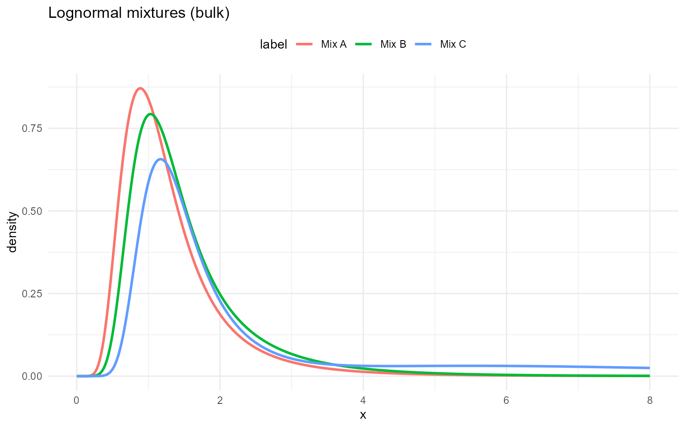
With GPD tail
logn_gpd_sets <- list(
list(label = "Mix A", w = c(0.6, 0.4), meanlog = c(0, 1), sdlog = c(0.3, 0.5), threshold = 2.5, tail_scale = 0.5, tail_shape = 0.2),
list(label = "Mix B", w = c(0.5, 0.5), meanlog = c(0.5, 1.2), sdlog = c(0.4, 0.4), threshold = 2.0, tail_scale = 0.4, tail_shape = 0.15),
list(label = "Mix C", w = c(0.7, 0.3), meanlog = c(0.8, 1.5), sdlog = c(0.25, 0.6), threshold = 3.0, tail_scale = 0.6, tail_shape = 0.18)
)
example <- logn_gpd_sets[[1]]
dLognormalMixGpd(2.5, w = example$w, meanlog = example$meanlog, sdlog = example$sdlog, threshold = example$threshold, tail_scale = example$tail_scale, tail_shape = example$tail_shape)[1] 0.455
pLognormalMixGpd(2.5, w = example$w, meanlog = example$meanlog, sdlog = example$sdlog, threshold = example$threshold, tail_scale = example$tail_scale, tail_shape = example$tail_shape)[1] 0.773
q_vec(qLognormalMixGpd, c(0.5, 0.9), w = example$w, meanlog = example$meanlog, sdlog = example$sdlog, threshold = example$threshold, tail_scale = example$tail_scale, tail_shape = example$tail_shape)[1] 1.27 2.95
draw_many(rLognormalMixGpd, example)[1] 2.805 0.680 2.416 0.878 1.244
df_logn_gpd <- do.call(rbind, lapply(logn_gpd_sets, function(ps) {
data.frame(x = grid, density = density_curve(grid, dLognormalMixGpd, list(w = ps$w, meanlog = ps$meanlog, sdlog = ps$sdlog, threshold = ps$threshold, tail_scale = ps$tail_scale, tail_shape = ps$tail_shape)), label = ps$label)
}))
ggplot(df_logn_gpd, aes(x = x, y = density, color = label)) +
geom_line(linewidth = 1) +
labs(title = "Lognormal mixtures with GPD tail (different thresholds)", x = "x", y = "density") +
theme_minimal() + theme(legend.position = "top")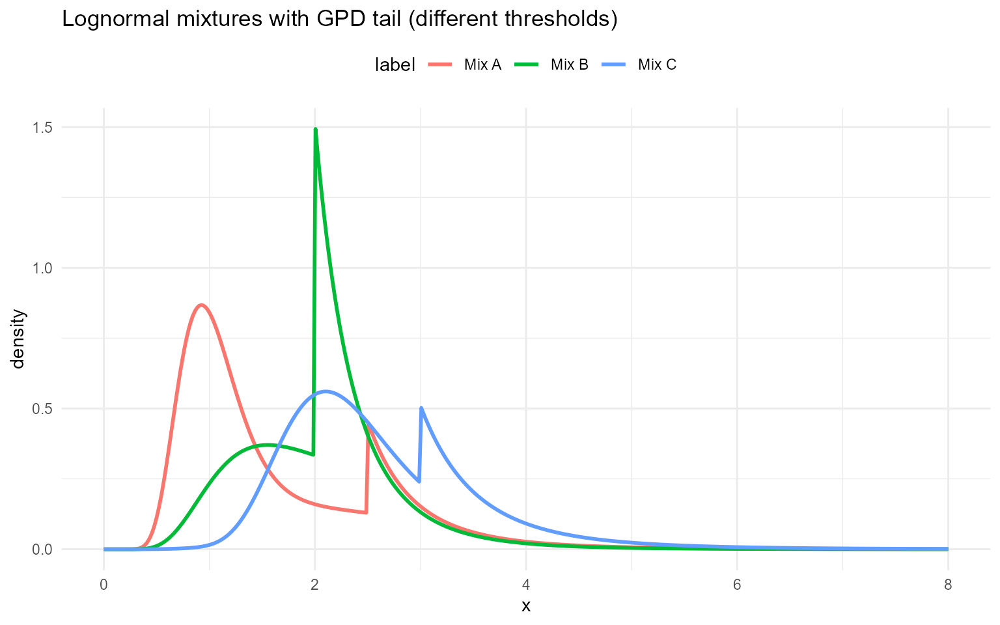
Laplace
Laplace mixture kernel
A Laplace (double-exponential) component with location and scale has density
A finite Laplace mixture is
Parameter mapping (math
code):
location[j],
scale[j],
w[j].
Laplace mixture with GPD tail
The spliced kernel uses the Laplace mixture below and a GPD tail above .
Tail mapping (math
code):
threshold,
tail_scale,
tail_shape.
Without GPD (mixture kernel)
Laplace mixture density .
grid <- seq(-4, 4, length.out = 400)
lap_sets <- list(
list(label = "Mix A", w = c(0.6, 0.3, 0.1), location = c(0.0, 1.0, -2), scale = c(1.0, 0.9, 1.1)),
list(label = "Mix B", w = c(0.5, 0.3, 0.2), location = c(0.2, 1.2, -0.5), scale = c(0.9, 2, 1.0)),
list(label = "Mix C", w = c(0.4, 0.35, 0.25), location = c(-0.2, 2, -1.0), scale = c(1.1, 0.95, 1.05))
)
example <- lap_sets[[1]]
dLaplaceMix(0, w = example$w, location = example$location, scale = example$scale)[1] 0.362
dLaplaceMix(0, w = example$w, location = example$location, scale = example$scale, log = TRUE)[1] -1.02
pLaplaceMix(0, w = example$w, location = example$location, scale = example$scale)[1] 0.441
pLaplaceMix(0, w = example$w, location = example$location, scale = example$scale, lower.tail = FALSE)[1] 0.559
pLaplaceMix(0, w = example$w, location = example$location, scale = example$scale, log.p = TRUE)[1] -0.818
q_vec(qLaplaceMix, c(0.25, 0.5, 0.75), w = example$w,
location = example$location, scale = example$scale)[1] -0.734 0.171 1.050
q_vec(qLaplaceMix, c(0.25, 0.5, 0.75), w = example$w,
location = example$location, scale = example$scale, lower.tail = FALSE)[1] 1.050 0.171 -0.734
q_vec(qLaplaceMix, c(log(0.25), log(0.5), log(0.75)), w = example$w,
location = example$location, scale = example$scale, log.p = TRUE)[1] -0.734 0.171 1.050
draw_many(rLaplaceMix, list(w = example$w, location = example$location, scale = example$scale))[1] 0.389 -1.292 0.301 -0.514 2.179
df_lap <- do.call(rbind, lapply(lap_sets, function(ps) {
data.frame(x = grid, density = density_curve(grid, dLaplaceMix, list(w = ps$w, location = ps$location, scale = ps$scale)), label = ps$label)
}))
ggplot(df_lap, aes(x = x, y = density, color = label)) +
geom_line(linewidth = 1) +
labs(title = "Laplace mixtures (bulk)", x = "x", y = "density") +
theme_minimal() + theme(legend.position = "top")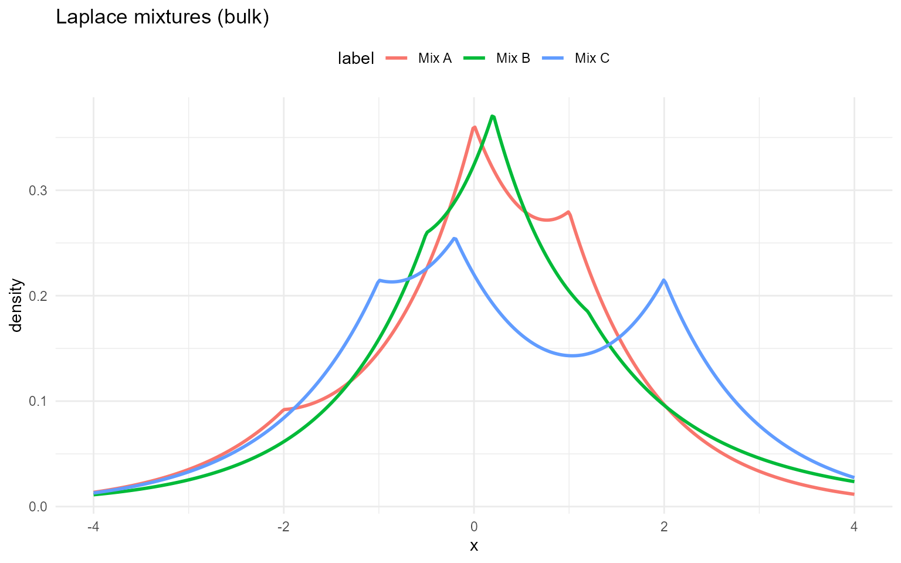
With GPD tail
lap_gpd_sets <- list(
list(label = "Mix A", w = c(0.6, 0.4), location = c(-0.5, 1), scale = c(0.4, 0.6), threshold = 1.5, tail_scale = 0.35, tail_shape = 0.3),
list(label = "Mix B", w = c(0.5, 0.5), location = c(0, 0.8), scale = c(0.5, 0.5), threshold = 1.2, tail_scale = 0.3, tail_shape = 0.25),
list(label = "Mix C", w = c(0.7, 0.3), location = c(0.2, 1.5), scale = c(0.35, 0.7), threshold = 1.8, tail_scale = 0.4, tail_shape = 0.22)
)
example <- lap_gpd_sets[[1]]
dLaplaceMixGpd(1, w = example$w, location = example$location, scale = example$scale, threshold = example$threshold, tail_scale = example$tail_scale, tail_shape = example$tail_shape)[1] 0.351
pLaplaceMixGpd(1, w = example$w, location = example$location, scale = example$scale, threshold = example$threshold, tail_scale = example$tail_scale, tail_shape = example$tail_shape)[1] 0.793
q_vec(qLaplaceMixGpd, c(0.5, 0.9), w = example$w, location = example$location, scale = example$scale, threshold = example$threshold, tail_scale = example$tail_scale, tail_shape = example$tail_shape)[1] -0.162 1.430
draw_many(rLaplaceMixGpd, example)[1] 1.335 -0.749 0.535 1.910 -0.666
df_lap_gpd <- do.call(rbind, lapply(lap_gpd_sets, function(ps) {
data.frame(x = grid, density = density_curve(grid, dLaplaceMixGpd, list(w = ps$w, location = ps$location, scale = ps$scale, threshold = ps$threshold, tail_scale = ps$tail_scale, tail_shape = ps$tail_shape)), label = ps$label)
}))
ggplot(df_lap_gpd, aes(x = x, y = density, color = label)) +
geom_line(linewidth = 1) +
labs(title = "Laplace mixtures with GPD tail (different thresholds)", x = "x", y = "density") +
theme_minimal() + theme(legend.position = "top")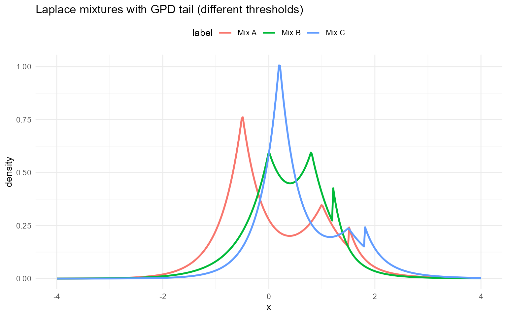
Inverse Gaussian (mixture kernel)
Inverse Gaussian mixture kernel
An inverse Gaussian component with mean and shape has density
A finite inverse Gaussian mixture is
Parameter mapping (math
code):
mean[j],
shape[j],
w[j].
Inverse Gaussian mixture with GPD tail
The spliced variant attaches a GPD tail above .
Tail mapping (math
code):
threshold,
tail_scale,
tail_shape.
Without GPD
grid <- seq(0.1, 6, length.out = 400)
ig_sets <- list(
list(label = "Mix A", w = c(0.6, 0.3, 0.1), mean = c(1.0, 1.5, 2.0), shape = c(2.0, 3.0, 4.0)),
list(label = "Mix B", w = c(0.5, 0.3, 0.2), mean = c(1.1, 1.6, 2.2), shape = c(2.2, 3.2, 4.2)),
list(label = "Mix C", w = c(0.4, 0.35, 0.25), mean = c(0.9, 1.4, 2.1), shape = c(1.8, 2.8, 3.8))
)
example <- ig_sets[[1]]
dInvGaussMix(1, w = example$w, mean = example$mean, shape = example$shape)[1] 0.562
dInvGaussMix(1.5, w = example$w, mean = example$mean, shape = example$shape, log = TRUE)[1] -1.18
pInvGaussMix(1.5, w = example$w, mean = example$mean, shape = example$shape)[1] 0.729
pInvGaussMix(1.5, w = example$w, mean = example$mean, shape = example$shape, lower.tail = FALSE)[1] 0.271
pInvGaussMix(1.5, w = example$w, mean = example$mean, shape = example$shape, log.p = TRUE)[1] -0.316
q_vec(qInvGaussMix, c(0.25, 0.5, 0.75), w = example$w, mean = example$mean,
shape = example$shape)[1] 0.608 0.971 1.572
q_vec(qInvGaussMix, c(0.25, 0.5, 0.75), w = example$w, mean = example$mean,
shape = example$shape, lower.tail = FALSE)[1] 1.572 0.971 0.608
q_vec(qInvGaussMix, c(log(0.25), log(0.5), log(0.75)), w = example$w,
mean = example$mean, shape = example$shape, log.p = TRUE)[1] 0.608 0.971 1.572
draw_many(rInvGaussMix, list(w = example$w, mean = example$mean, shape = example$shape))[1] 1.158 0.670 0.321 0.617 0.595
df_ig <- do.call(rbind, lapply(ig_sets, function(ps) {
data.frame(x = grid, density = density_curve(grid, dInvGaussMix, list(w = ps$w, mean = ps$mean, shape = ps$shape)), label = ps$label)
}))
ggplot(df_ig, aes(x = x, y = density, color = label)) +
geom_line(linewidth = 1) +
labs(title = "Inverse Gaussian mixtures (bulk)", x = "x", y = "density") +
theme_minimal() + theme(legend.position = "top")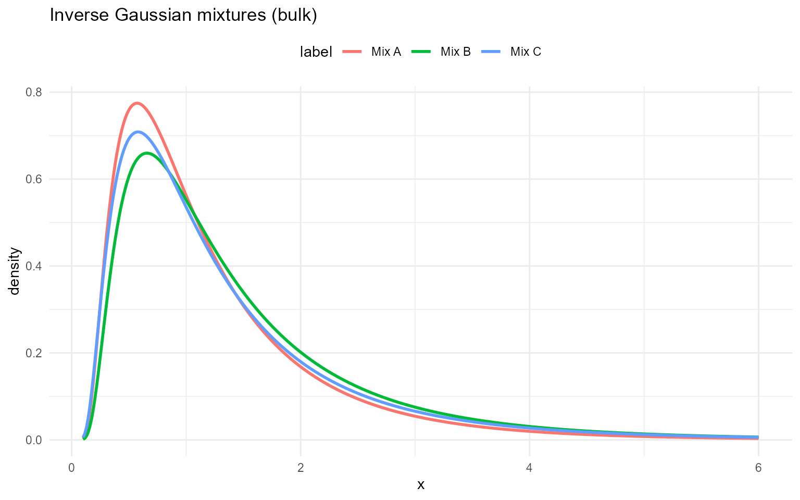
With GPD tail
ig_gpd_sets <- list(
list(label = "Mix A", w = c(0.6, 0.4), mean = c(1, 2.5), shape = c(2, 3), threshold = 2.5, tail_scale = 0.5, tail_shape = 0.25),
list(label = "Mix B", w = c(0.5, 0.5), mean = c(1.5, 2), shape = c(2.5, 2.5), threshold = 2.0, tail_scale = 0.4, tail_shape = 0.2),
list(label = "Mix C", w = c(0.7, 0.3), mean = c(1.2, 3), shape = c(3, 2), threshold = 3.0, tail_scale = 0.6, tail_shape = 0.18)
)
example <- ig_gpd_sets[[1]]
dInvGaussMixGpd(2.5, w = example$w, mean = example$mean, shape = example$shape, threshold = example$threshold, tail_scale = example$tail_scale, tail_shape = example$tail_shape)[1] 0.325
pInvGaussMixGpd(2.5, w = example$w, mean = example$mean, shape = example$shape, threshold = example$threshold, tail_scale = example$tail_scale, tail_shape = example$tail_shape)[1] 0.837
q_vec(qInvGaussMixGpd, c(0.5, 0.9), w = example$w, mean = example$mean, shape = example$shape, threshold = example$threshold, tail_scale = example$tail_scale, tail_shape = example$tail_shape)[1] 1.06 2.76
draw_many(rInvGaussMixGpd, example)[1] 1.294 0.243 0.634 0.841 0.920
df_ig_gpd <- do.call(rbind, lapply(ig_gpd_sets, function(ps) {
data.frame(x = grid, density = density_curve(grid, dInvGaussMixGpd, list(w = ps$w, mean = ps$mean, shape = ps$shape, threshold = ps$threshold, tail_scale = ps$tail_scale, tail_shape = ps$tail_shape)), label = ps$label)
}))
ggplot(df_ig_gpd, aes(x = x, y = density, color = label)) +
geom_line(linewidth = 1) +
labs(title = "Inverse Gaussian mixtures with GPD tail", x = "x", y = "density") +
theme_minimal() + theme(legend.position = "top")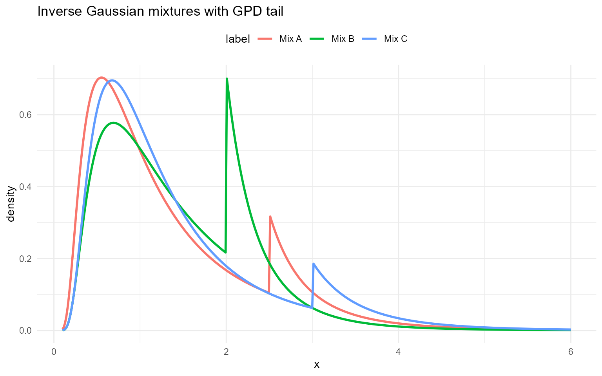
Amoroso (bulk kernel and mixture)
Amoroso mixture kernel
An Amoroso component with location , scale , and shapes , has density (for )
A finite Amoroso mixture is
Parameter mapping (math
code):
loc[j],
scale[j],
shape1[j],
shape2[j],
w[j].
Amoroso mixture with GPD tail
The spliced kernel attaches a GPD tail above .
Tail mapping (math
code):
threshold,
tail_scale,
tail_shape.
Without GPD
grid <- seq(0.01, 6, length.out = 400)
amor_sets <- list(
list(label = "Mix A", w = c(0.6, 0.3, 0.1), loc = c(0.5, 0.5, 0.5), scale = c(1.0, 1.3, 1.6), shape1 = c(2.5, 3.0, 4.0), shape2 = c(1.2, 1.2, 1.2)),
list(label = "Mix B", w = c(0.5, 0.3, 0.2), loc = c(0.4, 0.6, 0.6), scale = c(1.1, 1.2, 1.5), shape1 = c(2.2, 2.8, 3.8), shape2 = c(1.1, 1.2, 1.3)),
list(label = "Mix C", w = c(0.4, 0.35, 0.25), loc = c(0.6, 0.6, 0.6), scale = c(0.9, 1.1, 1.4), shape1 = c(2.0, 2.6, 3.5), shape2 = c(1.0, 1.1, 1.2))
)
example <- amor_sets[[1]]
dAmorosoMix(2, w = example$w, loc = example$loc, scale = example$scale,
shape1 = example$shape1, shape2 = example$shape2)[1] 0.305
dAmorosoMix(2, w = example$w, loc = example$loc, scale = example$scale,
shape1 = example$shape1, shape2 = example$shape2, log = TRUE)[1] -1.19
pAmorosoMix(2, w = example$w, loc = example$loc, scale = example$scale,
shape1 = example$shape1, shape2 = example$shape2)[1] 0.24
pAmorosoMix(2, w = example$w, loc = example$loc, scale = example$scale,
shape1 = example$shape1, shape2 = example$shape2, lower.tail = FALSE)[1] 0.76
pAmorosoMix(2, w = example$w, loc = example$loc, scale = example$scale,
shape1 = example$shape1, shape2 = example$shape2, log.p = TRUE)[1] -1.43
q_vec(qAmorosoMix, c(0.25, 0.5, 0.75), w = example$w, loc = example$loc,
scale = example$scale, shape1 = example$shape1, shape2 = example$shape2)[1] 2.03 2.86 3.99
q_vec(qAmorosoMix, c(0.25, 0.5, 0.75), w = example$w, loc = example$loc,
scale = example$scale, shape1 = example$shape1, shape2 = example$shape2,
lower.tail = FALSE)[1] 3.99 2.86 2.03
q_vec(qAmorosoMix, c(log(0.25), log(0.5), log(0.75)), w = example$w,
loc = example$loc, scale = example$scale, shape1 = example$shape1,
shape2 = example$shape2, log.p = TRUE)[1] 2.03 2.86 3.99
draw_many(rAmorosoMix, list(w = example$w, loc = example$loc,
scale = example$scale, shape1 = example$shape1,
shape2 = example$shape2))[1] 1.24 1.68 4.04 3.34 3.14
df_amor <- do.call(rbind, lapply(amor_sets, function(ps) {
data.frame(x = grid, density = density_curve(grid, dAmorosoMix, list(w = ps$w, loc = ps$loc, scale = ps$scale, shape1 = ps$shape1, shape2 = ps$shape2)), label = ps$label)
}))
ggplot(df_amor, aes(x = x, y = density, color = label)) +
geom_line(linewidth = 1) +
labs(title = "Amoroso mixtures (bulk)", x = "x", y = "density") +
theme_minimal() + theme(legend.position = "top")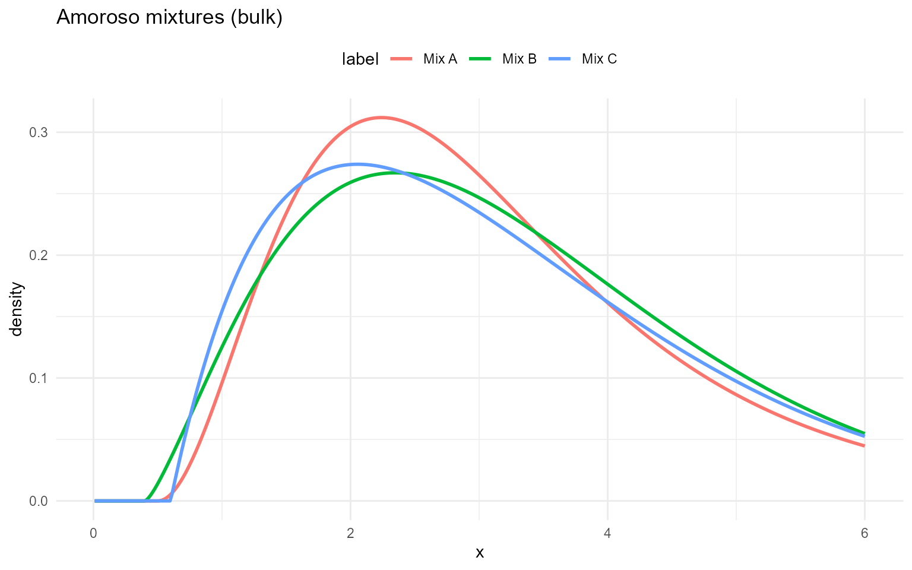
With GPD tail
amor_gpd_sets <- list(
list(label = "Mix A", w = c(0.6, 0.3, 0.1), loc = c(0.5, 0.5, 0.5), scale = c(1.0, 1.3, 1.6), shape1 = c(2.5, 3.0, 4.0), shape2 = c(1.2, 1.2, 1.2), threshold = 2.8, tail_scale = 0.4, tail_shape = 0.2),
list(label = "Mix B", w = c(0.5, 0.3, 0.2), loc = c(0.4, 0.6, 0.6), scale = c(1.1, 1.2, 1.5), shape1 = c(2.2, 2.8, 3.8), shape2 = c(1.1, 1.2, 1.3), threshold = 3.0, tail_scale = 0.35, tail_shape = 0.18),
list(label = "Mix C", w = c(0.4, 0.35, 0.25), loc = c(0.6, 0.6, 0.6), scale = c(0.9, 1.1, 1.4), shape1 = c(2.0, 2.6, 3.5), shape2 = c(1.0, 1.1, 1.2), threshold = 2.5, tail_scale = 0.45, tail_shape = 0.22)
)
example <- amor_gpd_sets[[1]]
dAmorosoMixGpd(3, w = example$w, loc = example$loc, scale = example$scale,
shape1 = example$shape1, shape2 = example$shape2,
threshold = example$threshold, tail_scale = example$tail_scale,
tail_shape = example$tail_shape)[1] 0.729
dAmorosoMixGpd(3, w = example$w, loc = example$loc, scale = example$scale,
shape1 = example$shape1, shape2 = example$shape2,
threshold = example$threshold, tail_scale = example$tail_scale,
tail_shape = example$tail_shape, log = TRUE)[1] -0.316
pAmorosoMixGpd(3, w = example$w, loc = example$loc, scale = example$scale,
shape1 = example$shape1, shape2 = example$shape2,
threshold = example$threshold, tail_scale = example$tail_scale,
tail_shape = example$tail_shape)[1] 0.679
pAmorosoMixGpd(3, w = example$w, loc = example$loc, scale = example$scale,
shape1 = example$shape1, shape2 = example$shape2,
threshold = example$threshold, tail_scale = example$tail_scale,
tail_shape = example$tail_shape, lower.tail = FALSE)[1] 0.321
pAmorosoMixGpd(3, w = example$w, loc = example$loc, scale = example$scale,
shape1 = example$shape1, shape2 = example$shape2,
threshold = example$threshold, tail_scale = example$tail_scale,
tail_shape = example$tail_shape, log.p = TRUE)[1] -0.387
q_vec(qAmorosoMixGpd, c(0.25, 0.5, 0.75), w = example$w, loc = example$loc,
scale = example$scale, shape1 = example$shape1, shape2 = example$shape2,
threshold = example$threshold, tail_scale = example$tail_scale,
tail_shape = example$tail_shape)[1] 2.03 2.81 3.11
q_vec(qAmorosoMixGpd, c(0.25, 0.5, 0.75), w = example$w, loc = example$loc,
scale = example$scale, shape1 = example$shape1, shape2 = example$shape2,
threshold = example$threshold, tail_scale = example$tail_scale,
tail_shape = example$tail_shape, lower.tail = FALSE)[1] 3.11 2.81 2.03
q_vec(qAmorosoMixGpd, c(log(0.25), log(0.5), log(0.75)), w = example$w,
loc = example$loc, scale = example$scale, shape1 = example$shape1,
shape2 = example$shape2, threshold = example$threshold,
tail_scale = example$tail_scale, tail_shape = example$tail_shape,
log.p = TRUE)[1] 2.03 2.81 3.11
draw_many(rAmorosoMixGpd, example)[1] 3.11 5.16 3.01 4.03 3.21
df_amor_gpd <- do.call(rbind, lapply(amor_gpd_sets, function(ps) {
data.frame(x = grid, density = density_curve(grid, dAmorosoMixGpd, list(w = ps$w, loc = ps$loc, scale = ps$scale, shape1 = ps$shape1, shape2 = ps$shape2, threshold = ps$threshold, tail_scale = ps$tail_scale, tail_shape = ps$tail_shape)), label = ps$label)
}))
ggplot(df_amor_gpd, aes(x = x, y = density, color = label)) +
geom_line(linewidth = 1) +
labs(title = "Amoroso mixtures with GPD tail", x = "x", y = "density") +
theme_minimal() + theme(legend.position = "top")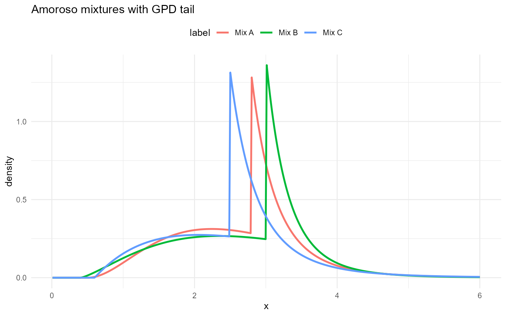
Inverse Gaussian (base kernel)
Inverse Gaussian base kernel
This section documents the same inverse Gaussian density as above, but for a single component rather than a mixture:
Parameter mapping (math
code):
mean,
shape.
Inverse Gaussian base with GPD tail
The dInvGaussGpd, pInvGaussGpd,
qInvGaussGpd, and rInvGaussGpd functions
splice the base inverse Gaussian below
with a GPD tail above
.
Tail mapping (math
code):
threshold,
tail_scale,
tail_shape.
Without GPD
grid <- seq(0.1, 6, length.out = 400)
ig_base_sets <- list(
list(label = "Base A", mean = 1.2, shape = 3.0),
list(label = "Base B", mean = 1.5, shape = 4.0),
list(label = "Base C", mean = 1.0, shape = 2.5)
)
example <- ig_base_sets[[1]]
dInvGauss(1, mean = example$mean, shape = example$shape)[1] 0.663
dInvGauss(1, mean = example$mean, shape = example$shape, log = TRUE)[1] -0.411
pInvGauss(1, mean = example$mean, shape = example$shape)[1] 0.497
pInvGauss(1, mean = example$mean, shape = example$shape, lower.tail = FALSE)[1] 0.503
pInvGauss(1, mean = example$mean, shape = example$shape, log.p = TRUE)[1] -0.698
q_vec(qInvGauss, c(0.25, 0.5, 0.75), mean = example$mean,
shape = example$shape)[1] 0.673 1.004 1.509
q_vec(qInvGauss, c(0.25, 0.5, 0.75), mean = example$mean,
shape = example$shape, lower.tail = FALSE)[1] 1.509 1.004 0.673
q_vec(qInvGauss, c(log(0.25), log(0.5), log(0.75)), mean = example$mean,
shape = example$shape, log.p = TRUE)[1] 0.673 1.004 1.509
draw_many(rInvGauss, list(mean = example$mean, shape = example$shape))[1] 0.539 2.531 2.080 0.457 1.434
df_ig_base <- do.call(rbind, lapply(ig_base_sets, function(ps) {
data.frame(x = grid, density = density_curve(grid, dInvGauss, list(mean = ps$mean, shape = ps$shape)), label = ps$label)
}))
ggplot(df_ig_base, aes(x = x, y = density, color = label)) +
geom_line(linewidth = 1) +
labs(title = "Inverse Gaussian base kernels", x = "x", y = "density") +
theme_minimal() + theme(legend.position = "top")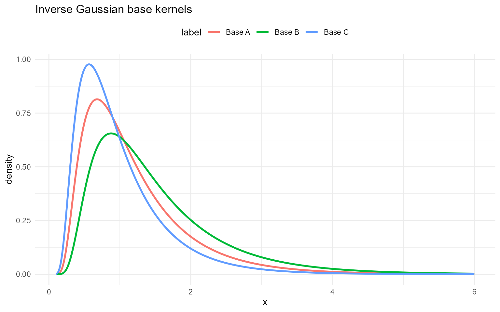
With GPD tail
ig_base_gpd_sets <- list(
list(label = "Base A", mean = 1.5, shape = 2, threshold = 2.0, tail_scale = 0.4, tail_shape = 0.2),
list(label = "Base B", mean = 1.2, shape = 2.5, threshold = 1.8, tail_scale = 0.35, tail_shape = 0.18),
list(label = "Base C", mean = 1.8, shape = 3, threshold = 2.5, tail_scale = 0.5, tail_shape = 0.22)
)
example <- ig_base_gpd_sets[[1]]
dInvGaussGpd(2, mean = example$mean, shape = example$shape,
threshold = example$threshold, tail_scale = example$tail_scale,
tail_shape = example$tail_shape)[1] 0.57
dInvGaussGpd(2, mean = example$mean, shape = example$shape,
threshold = example$threshold, tail_scale = example$tail_scale,
tail_shape = example$tail_shape, log = TRUE)[1] -0.561
pInvGaussGpd(2, mean = example$mean, shape = example$shape,
threshold = example$threshold, tail_scale = example$tail_scale,
tail_shape = example$tail_shape)[1] 0.772
pInvGaussGpd(2, mean = example$mean, shape = example$shape,
threshold = example$threshold, tail_scale = example$tail_scale,
tail_shape = example$tail_shape, lower.tail = FALSE)[1] 0.228
pInvGaussGpd(2, mean = example$mean, shape = example$shape,
threshold = example$threshold, tail_scale = example$tail_scale,
tail_shape = example$tail_shape, log.p = TRUE)[1] -0.259
q_vec(qInvGaussGpd, c(0.25, 0.5, 0.75), mean = example$mean,
shape = example$shape, threshold = example$threshold,
tail_scale = example$tail_scale, tail_shape = example$tail_shape)[1] 0.656 1.101 1.890
q_vec(qInvGaussGpd, c(0.25, 0.5, 0.75), mean = example$mean,
shape = example$shape, threshold = example$threshold,
tail_scale = example$tail_scale, tail_shape = example$tail_shape,
lower.tail = FALSE)[1] 1.890 1.101 0.656
q_vec(qInvGaussGpd, c(log(0.25), log(0.5), log(0.75)), mean = example$mean,
shape = example$shape, threshold = example$threshold,
tail_scale = example$tail_scale, tail_shape = example$tail_shape,
log.p = TRUE)[1] 0.656 1.101 1.890
draw_many(rInvGaussGpd, example)[1] 1.828 0.772 0.885 0.584 2.043
df_ig_base_gpd <- do.call(rbind, lapply(ig_base_gpd_sets, function(ps) {
data.frame(x = grid, density = density_curve(grid, dInvGaussGpd, list(mean = ps$mean, shape = ps$shape, threshold = ps$threshold, tail_scale = ps$tail_scale, tail_shape = ps$tail_shape)), label = ps$label)
}))
ggplot(df_ig_base_gpd, aes(x = x, y = density, color = label)) +
geom_line(linewidth = 1) +
labs(title = "Inverse Gaussian base with GPD tail", x = "x", y = "density") +
theme_minimal() + theme(legend.position = "top")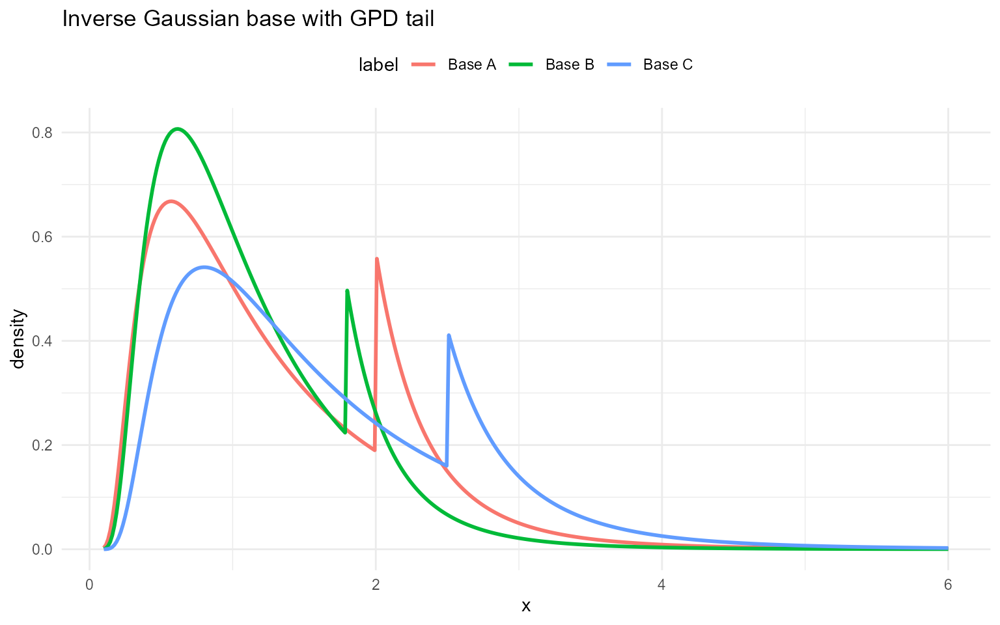
Cauchy
Cauchy base and mixtures
A Cauchy distribution with location and scale has density
A finite Cauchy mixture is
Parameter mapping (math
code):
location,
scale; in mixtures
location[j],
scale[j],
w[j].
Without GPD (base and mixture)
grid <- seq(-8, 8, length.out = 400)
cauchy_sets <- list(
list(label = "Base", location = 0, scale = 1),
list(label = "Mix A", w = c(0.6, 0.3, 0.1), location = c(-1, 0, 1), scale = c(1.0, 1.2, 2)),
list(label = "Mix B", w = c(0.5, 0.3, 0.2), location = c(-1.5, 0.5, 1.5), scale = c(1.1, 1.0, 0.9))
)
base_par <- cauchy_sets[[1]]
mix_par1 <- cauchy_sets[[2]]
dCauchy(0, location = base_par$location, scale = base_par$scale)[1] 0.318
dCauchy(0, location = base_par$location, scale = base_par$scale, log = TRUE)[1] -1.14
pCauchy(0, location = base_par$location, scale = base_par$scale)[1] 0.5
pCauchy(0, location = base_par$location, scale = base_par$scale, lower.tail = FALSE)[1] 0.5
pCauchy(0, location = base_par$location, scale = base_par$scale, log.p = TRUE)[1] -0.693
q_vec(qCauchy, c(0.25, 0.5, 0.75), location = base_par$location,
scale = base_par$scale)[1] -1 0 1
q_vec(qCauchy, c(0.25, 0.5, 0.75), location = base_par$location,
scale = base_par$scale, lower.tail = FALSE)[1] 1 0 -1
q_vec(qCauchy, c(log(0.25), log(0.5), log(0.75)), location = base_par$location,
scale = base_par$scale, log.p = TRUE)[1] -1 0 1
draw_many(rCauchy, list(location = base_par$location, scale = base_par$scale))[1] 1.087 6.063 1.561 -0.687 0.508
dCauchyMix(0, w = mix_par1$w, location = mix_par1$location, scale = mix_par1$scale)[1] 0.188
dCauchyMix(0, w = mix_par1$w, location = mix_par1$location, scale = mix_par1$scale, log = TRUE)[1] -1.67
draw_many(rCauchyMix, list(w = mix_par1$w, location = mix_par1$location, scale = mix_par1$scale))[1] 14.66 -1.92 -1.63 3.11 -1.95
df_cauchy <- rbind(
data.frame(x = grid, density = density_curve(grid, dCauchy, list(location = base_par$location, scale = base_par$scale)), label = "Base"),
data.frame(x = grid, density = density_curve(grid, dCauchyMix, list(w = mix_par1$w, location = mix_par1$location, scale = mix_par1$scale)), label = "Mix A"),
data.frame(x = grid, density = density_curve(grid, dCauchyMix, list(w = cauchy_sets[[3]]$w, location = cauchy_sets[[3]]$location, scale = cauchy_sets[[3]]$scale)), label = "Mix B")
)
ggplot(df_cauchy, aes(x = x, y = density, color = label)) +
geom_line(linewidth = 1) +
labs(title = "Cauchy base and mixtures", x = "x", y = "density") +
theme_minimal() + theme(legend.position = "top")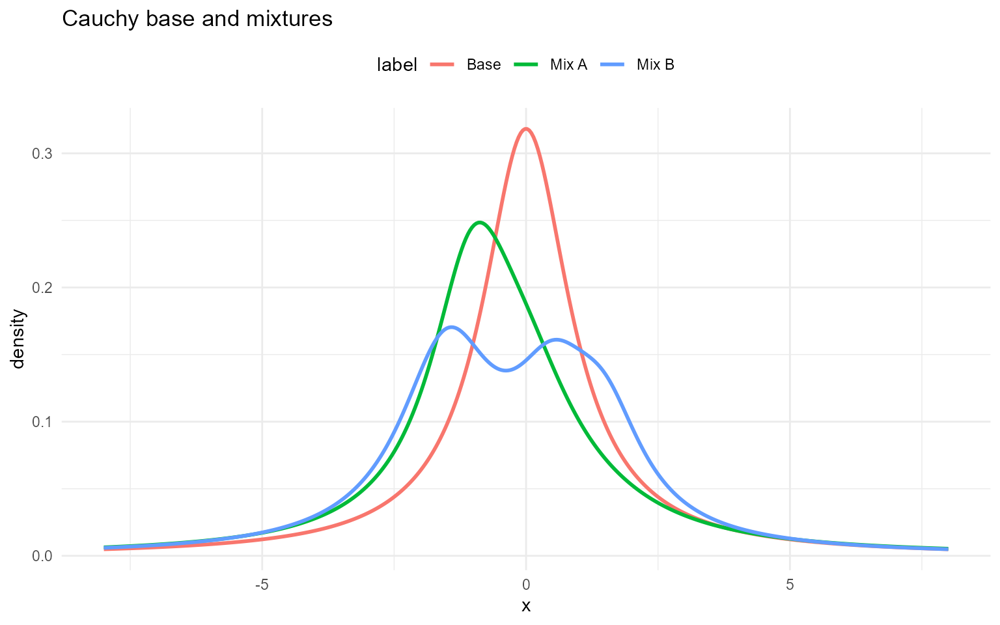
Summary: Distribution & Backend Reference
This section provides a compact reference for the distributions
supported by DPmixGPD and the corresponding user-facing
function families.
The CRP backend uses base (single-kernel) functions,
while the SB backend uses mixture (multi-component)
functions. The “Type” column indicates whether each backend expects
scalar parameters (single value per parameter) or
vectors indexed by mixture component.
Notes
CRP Backend uses base (single-kernel) functions; parameters are scalar.
SB Backend uses mixture/spliced mixture functions; component-specific parameters are typically vectors indexed by component ; mixture weights
ware required as vector.For GPD-only, SB entries are NA because there is no mixture-only GPD wrapper in the SB family.